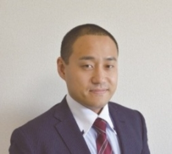

| 【４０代編】独身者の婚活リアル相談Ｑ＆Ａ！: 婚活のプロが語る本音の話！婚活を始めたら読む本 結婚活動 | |
| 結婚活動コーチングトレーナー 入倉秀 | |
| (2019) | |
【４０代編】独身者の婚活リアル相談Ｑ＆Ａ！
～婚活のプロが語る本音の話！婚活を始めたら読む本～
一般社団法人 日本地域活性化事業協会 代表理事
結婚活動コーチングトレーナー 入倉秀
定価１５００ 円( 税 込)

自分の悩みはみんなの悩み？
まず初めに...婚活というもの関わらせて頂き早１０年。出会いからスタートして７つの婚活のステップを提唱させて頂いておりますが...
出会い↓連絡先の交換↓デート↓告白↓お付合い↓プロポーズ↓結婚
婚活で最初につまずくのは、登竜門の出会いと連絡先の交換です。なぜつまずくのか？これは仕方ないと言えば仕方ないのですが...、
１、恋愛の経験不足からくるもの。
２、親世代も経験したことのない婚活という特殊なライフイベント
だと思っています。まず１については完全に責任転嫁できます。うまくいかないのは経験が少ないことと、経験がないからどう対応していいかわからず...。また恋愛というものは人から聞いたり学ぶというものではなく出来ること。そう無意識にできるものだと思い込んでしまっているものなのです。でも実際には、 婚活を頑張らないと結婚出来ない人と婚活を意識しなくても結婚出来る人がいるわけで...。 これは仕方ないことかなとも思っています。なぜ仕方ないのか？だって経験がないから今の時代恋愛というものは優先順位が低い独身者も多く...だって娯楽がたくさんありますからね！わざわざ無理して...嫌な思いをして恋愛をする必要性というものは価値としてはほぼないかもしれません。また自分の思い通りにいかない ...(笑) だって相手がいることですからね...。でも今の娯楽のほとんどは自分の意思で行うことが多く...。そういう意味では自由にいろいろと出来るわけで...。でも恋愛は正解がなく...もちろん間違いもなくという部分では扱いにくいこともあります。だって十人十色だし。１０人いれば１０通りの人生がありますからね。本題から少しずれましたが...、この恋愛の経験ですが、数をこなせばある程度方向性は見えてきますし、自分はこういう人間だからこういう恋愛が出来るというものはわかります。でもそういう経験が少ない時点で...嫌な思いや苦い経験をしてしまうとわざわざ自分が傷ついてまでやることでもないということに...。だって娯楽はたくさんありますからね！３０歳を過ぎてある程度仕事に余裕が出てきたら新しい趣味を始める人が増えますしね。
２ですが、これはもうどうしようもない。そもそも婚活という言葉が提唱されてまだ１０年そこそこですからもちろん独身者の親世代は婚活なんて意識して行ってきていません。親世代はお見合い結婚か社内恋愛が主流の日本の良き文化の時代ですから、そういう意味では今の子供世代の結婚については軽視している親御さんも多いのも事実です。だって自分たちはそこまで考えずに結婚した事実があるから。もちろん親だからこそ子供の結婚について真剣に悩んでいる親御さんもたくさんいます。でも経験したことがないからこそ適格なアドバイスや経験者として語ることもできない...。もっというと昔の仲人さんや縁談を持ってくるおせっかいおばちゃんをされていた方々も今の婚活事情については正直理解は難しい部分があるかと思います。かといって結婚活動について知識のある職業なんてまだまだメジャーじゃないですし、既存の結婚相談所については正直昭和のやり方を引きついでいるという事実は否めません。ただ近年では時代の進む速さが恐ろしくなってきており...生身の人間がこの時代の恋愛や結婚のあるべき姿についていけていない...というのが現実的な悩みに繋がってるかなと思います。
一般論なんかどうでもいい！結婚できればいいの！
一応私入倉もプロとして活動をさせて頂いておりますが...。今出ている恋愛や婚活の書籍は一通り目を通させて頂いております。やはり関わっている一人の立場として思うことは...
現場と書籍の話は近いようで遠い世界の話になってしまっている
という懸念です。もちろん私もこのように書籍を書かせて頂いていますので同じように読まれてい思われている方もいるかもしれませんが...。多くの著者は現状をヒアリングして書籍にまとめている。だからこそ誇大広告ではないですが、目立つ部分については強調されてしまい面白おかしくまとめられている部分がある。ということです。実際に独身者で自分の結婚について考えている独身者の立場からすると...、もっとリアルな話しを知りたいと思うのは普通のことですが、でも実際に普通に起こっている婚活のリアルをまとめても普通なのであまり盛り上がらないというのは現実的な部分かと思います。その点、書籍を書かれている方々は評論家や学校関係者、婚活に関わったことのある方がなど...ある意味何冊も本を書いているとありきたりなことは本の題材としてはウケが悪いのかもしれません。となると余計に婚活の現場で起こっている大多数のことよりも、少数のメディアがウケそうな話題や反響のありそうなことに触れるのはごく自然なことで...。でも実際に起こっている身の回りん婚活は？となってしまい...。そこはありそうでなかなかない婚活の話というのがやはり出回ってしまっているのが現実です。そもそも婚活なんて独身者であれば好き好んで婚活をしたいと思う方はほぼいないわけで...、出来れば楽して理想の異性と結婚したいと思うのが普通のことかと...。であれば現実的に結婚出来る婚活の話...という部分で同じ独身者の悩みに触れたのが本書になるわけです。
悩みが解決すれば結婚出来るのか？
ここで一つポイントがあります。
『恋愛・婚活の悩みが解消されれば結婚できるのか？』
答えはＹＥＳでもＮＯでもあります 。(笑 )
悩みが解消すれば結果として結婚出来ることもありますが、悩みがなくても結婚出来ない人はいるわけで...。でも悩みを理解して
【この悩みはこういうものなのか！！】
という理解や頭で出来れば
うまくいくきっかけになる可能性
も高くなります。
なので、本書の使い方としたら...
みんなの悩みを利用して自分が成功する
これが大切で す(笑 )
この表現公に伝えると誤解を招きますが...、まずは自分の幸せを第一に考えて行動してください。他人の事や異性のことは二の次です。まずは自分が幸せになることが結婚活動のゴールへの近道です。よくお見合いや婚活イベントにい参加して連絡先を交換しても...人によっては声をかけられたから...断るのも悪いと思って...。またデートを重ねて相手のことを思うとなかなか断れない...などという相談をよく頂きます。これは正直いって
時間の無駄
です！失礼な言い方は十分承知しています。でも相手としても可能性がほぼないのであればはっきりと言ってもらったほうがけじめがつけやすいこともあります。また
うまくいかない人のパターンとしてマイナスや嫌なことばかり考えてそちらの行動をしてしまう
ことです。なのでご相談を頂いたりサポートさせて頂く方にはそこは口酸っぱく...自分の幸せを第一に考えて行動する。その相手にとっても先に自分が幸せになってその後異性でも紹介してあげたほうがよっぽど効果的かと思いますしね。
ですが実際にはそんなことを面と向かって相手には言えませ ん(笑) でも大切な考え方ですのでこの場でお伝えさせて頂きました。本書は何度も言いますが、みんなの悩みやなかなか行動できない内容を理解することによってご自身のきっかけになってもえらえばと思います。
実は本書に掲載させて頂いた質問は同じ質問をたくさんの方から頂いていることもたくさんあります。
自分の悩みはみんなと一緒
逆を言えば
これから自分も悩む可能性があることを先に知っておくとダメージが少ない！
ということもあります。もちろんすでに婚活や恋愛で悩みを抱えている場合は本書がきっかけになるかもしれませんしね！
恋愛に正解も間違っているもない！参考が一番
さて、本書を読んで頂くにあたり注意してほしいことがあります！それはこのＱ＆Ａのアンサーを書かせて頂いている 私入倉はそれなりに...１０年以上は婚活に携わっており、婚活イベントも１１００回以上運営していますし、お見合いも１０００回以上立ち会っています。悩み相談も何百人と対応させてい頂いておりますし、ご成婚の何百組も出ています。
でもこれは単なる実績や経験であって正解ではありません。
もちろん婚活未経験の方やまだ始めて少ない方からしたら確率論として成功しやすいアドバイスはできるとは思います 。( 謙遜して書いていますがかなり自信はあります。 笑 )
ですが私入倉のアンサーが実際にあなたの恋愛において正解になるかというは正直違います。そもそも恋愛に答えはないので正しいとか間違っているとかは判断するのはあくまでも自分なのです。自分がいいと思えばそれは正解ですし、でも社会的に間違っていると思われるような内容であったとしても...。だからこそ本書は参考程度にご理解頂くのがベストです。また他の書籍でたまに見るのが恋愛や婚活を断定した書き方をしていることがありますが...、私はどちらかというとその考えは否定的です。もちろん占いの方に決められていることや統計的にわかることであれば断定に近い表現は良いかとは思いますが...。でもあくまであなたの人生ですし、
あなたの判断がこの後の結婚生活のカギを握ってくることは事実です。その際に事実から目を背けず自分で決断して後悔のない選択をする練習をいまのうちからしてもらいたいと願っています。
なぜこんなことが必要か...それは今の時代離婚がオープンな時代と言われ、性格の不一致を始め離婚するきっかけはたくさんあるからです。もちろん結婚生活が出来ないのであれば離婚も視野に入れる必要はあるかと思います。でも改善してなんとかうまくやっていけるように対応できる力があれば...それは末永く幸せな家庭生活を築いてもらいたいと願っています。
『Ｑ＆Ａ』
～目次～
Ｑ．グループで仲よくなりたいと思うのは邪道でしょう か... ４０代 女性
Ｑ．４０才以上の方と友達になりたい。４０才すぎて友達をつくるのがむずかしい。 ４０代 女性
Ｑ．活動する上で自分の何がいけないのかわからない。上手くいくよう行動する為には何が必要なのか？ ４０代 女性
Ｑ．人に興味を持つことができないので、どのように興味を持てば良いか。 男性
Ｑ．お客さんとのコミュニケーションに悩んでいます。 ４０代 男性
Ｑ．初対面の人とはあがってしまい話しができない。 ４０代 男性
Ｑ．空気を読むのがヘタになった。相手の気持ちがわからなかったり。 ４０代 女性
Ｑ．周りの本心と本当の本 心( コミュニケーションの質 問) ４０代 男性
Ｑ．他人が話している声が聞きとりにくい時、聞き返せない ４０代 女性
Ｑ．若い子を好きになったが相手にもされませ ん( 知り合いで す) ４０代 男性
Ｑ．相手のたん所が気になったりとなかなか恋愛に発展しなかったり長続きしないで す... 。 ４０代 男性
Ｑ．婚活でのメール・ラインを交換してもあとが続きませ ん... ４０代 男性
Ｑ．会話で話をしますが、なかなかそれ以上、上手くいかず自分でも何がいけないのかわからない ４０代 女性
Ｑ．婚活後、相手との連絡のしかた、失敗せずに連絡をしたいです。 男性
Ｑ．連絡先交換後や２回目につなげる為にはどうしたらいいか。 ４０代 男性
Ｑ．ＬＩＮＥ交換後お食事に誘ってもらえるのはお会いするきっかけにもなりうれしいが会う前から友だちではなく彼女のような内容で接せられると対応に困ること が... 。まずは相手を知る時間がほしいです。
Ｑ．連絡先交換後や２回目につなげる為にはどうしたらいいか。４０代 男性
Ｑ．仕事も時間が不定期。休みも不定期。会う時間がお互いにとれなく終わってしまいます。 ４０代 女性
Ｑ．つき合いだすとダメ男にほぼほぼなっていくんです が... （束縛、ストーカー、働かない、けいたい 鬼 chec k ）などなど。そーゆー恋愛をひきよせてしまうのはどうしてですかね ４０代 女性
Ｑ．経済的な面、男性の職業で結婚しても大丈夫か？お付合いしても大丈夫かな ど... 。なかなか自分の好みの人に出会えない（イベントに行っても同じ人ばかりなど） 女性
Ｑ．付き合っていて結婚したい度合いが相手にどのくらいあるかを聞きにくい。どうしたら聞き出せるか？ ４０代 男性
Ｑ．相手の年 齢( ２０代、３０代、４０ 代) によって直ぐに結婚をもとめるものでしょうか？
Ｑ．悩みは、なかなかお互いが良いなと思える恋愛にならないことです。
Ｑ．フラれた時・食事に誘って断られた 時... 落ち込みます が... 、どうやって立ち直ればいいですか？ 男性
Ｑ．病気が結婚のネックにならないか？４０才では結婚はむずかしいか？ ４０代 女性
Ｑ．結婚にこだわりがなく、将来年を取ってから一人ではさみしいので親しい友だち感覚でおつきあいできる人がいればいいかなぁと思います 女性
※Ｑ＆Ａの注意点
本書での回答については、年代及び回答の仕方や文字の状 況( 質問用紙は手書きにて記載されてい る) により入倉が独断と偏見で質問者の状況から回答をさせて頂いております。また場合によっては、質問者が入倉で特定した上でのアドバイスも中には含まれています。なので、回答によっては一般論からかけ離れている可能性もあります。ご了承ください。ただ本書で伝えたいのは、
学者さんや評論家の方々が理解しがたい細かい部分の悩みから一般的な恋愛相談までの実情
をお伝えできればと思い構成させて頂いております。一般的に出回っている恋愛書籍・婚活書籍とは少し違った角度で編集させて頂いております。逆に一般書とは違い尖りすぎている回答もあり参考にならない部分も出てくる可能性もあります。その場合は参考程度にご理解頂ければと思いますし、
百聞は一見に如かず
ではないですが、他人の悩みを自分目線でどう考えるのか？もしくは入倉の回答からどう思うのか？という部分も楽しんで頂ければと思います。自分の悩みと同じ悩みがたくさんあったり、こういう悩みもあるのか？という部分から新たな婚活という理解をしてもらえればと思っています。
くれぐれも本書を鵜呑みにせず、自分は自分、他人は他人！という目線も残しつつ事例として理解してください。
最終的にご自身の恋愛や婚活・結婚はご自身が良いと思ったらそれが正解です！回りに何と言われようと！陰ながら応援しています！
出会Ｑ＆Ａ
Ｑ．出会いの機会がない！少ない！ ４０代 女性
Ａ．確かになかなか日常生活で出会いってないですよね...。私入倉も婚活中は出会いがないな～とよく思っていました。特に私入倉が独身のことはサラリーマンでさらに異性がいない職場だったので...これには愕然としました ね(笑) で大切なのは異性と出会う機会を自分から作ると言う事です。今の平成の時代結婚したければ自分で出会いを探さないとありません。親世代の昭和時代ですと勝手に回りから縁談の話しや紹介をしてもらえましたが...、今の時代プライバシーやパワハラセクハラという問題でなかなか他者が関与しにくい環境になってしまい...。だからこそ自分で活動しないと時間ばかりが過ぎてしまう...。もちろん誰か紹介してくれそうな人がいたらどんどんお願いすることも大切ですよ！で一番大切なことは... 『本当に結婚したいのか？お一人様でもいいのか？』 ということをぜひ一度真剣に考えてみて下さい。これ意外と考えたこと無い人が多く...回りが結婚しているから親から結婚しろと言われたから...という理由で客観的に婚活イベントに参加している方がいます。これだと活動しても効果が低く...だって自分目線じゃないですからね。本当に心底結婚したいで活動している人は年代関係なくかなりの確率で結婚されています。これ事実です。でも『出来たらいいなぁ～』とか『良い人いたら結婚考えようかな～』で活動していてもなかなか実を結ばないことが多いです。これはリアルに現場で起こっている事ですぜひ一度自分と向き合って頂き本当に結婚したいのであればぜひ積極的に異性に会う習慣にしてみてくださいね！あとは結婚相談所に登録も効果的な方法ですよ～
Ｑ．グループで仲よくなりたいと思うのは邪道でしょうか... ４０代 女性
Ａ．グループというのは、婚活イベントで出会ったメンバーという感じで大丈夫ですかね？合コンとかの自分の友達とみんなでという感じですと比較的グループで遊ぶ事って多いかと思うのですが...。今回は婚活イベントということでイベント内で知り合った同姓異性関わらずのグループでという回答をさせて頂きますね！実はですね...私も聞いた話ですが...意外とそういう感じで仲良くなって遊んだり飲みに行ったりしている人がいるみたいですよ！山梨恋活コミュニティのイベントはグループトークがメインでしてそのメンバーでみんなで連絡先を交換してみんなで集まることは実際にあるみたいですよ！ですので邪道ではなく...、実際に私入倉拙著【結婚活動必勝マニュアル】内でも触れていますが、１対１のデートも大切ですがグループデートでも距離を縮めることは可能です。なかなか気になる異性には声かけにくいですよね...そういうときはみんなを巻き込むのも方法の一つですよ！特にですが...平日開催している共同作業恋活では一体感になりやすいです。たこ焼き恋活やクレープ恋活、鍋恋活など一緒に作業することでお互いの距離が縮まり...みんなの距離も縮まり...。後日みんなで集まったと言う話しもありましたらかね！頑張ってみてくださいね！
Ｑ．４０才以上の方と友達になりたい。４０才すぎて友達をつくるのがむずかしい。 ４０代 女性
Ａ．かなか友達って作りれないですよね...。私入倉も婚活中は友達を作りたいなと思っても...。なかなかうまくいかない思い出がありました。 友達を作りたいなら...、率直にそう伝えればいいかなと思います。 もちろん友達から発展してお付き合いすることもあるかもしれませんし、友達を誘って複数で食事や飲み会なども考えられますからね。その紹介から素敵な異性にあえることもありますし。まずはお友達になれそうな人と出会うことが大切です。そういう場所に積極的に参加してみてくださいね。もちろん婚活イベントも大切ですし、それ以外で出会える方法を模索してみてくださいね。同じように友達を作りたいと思っている同年代の方も必ずいますから！
Ｑ．恋がわからなくなって来ました ４０代 男性
Ａ．恋ってなんでしょうね...。実は私も自分の恋なんてわかりません。その時の気分もあるだろうしその時に生活習慣とか見ているドラマの影響とか親しい人や職場の人との恋愛トークなどで価値観てかわってくるかと思います。でもそんな回答は期待していないと思いますので ...(笑) 。恋がわからないときこそまずは付き合ってみませんか？わからなくて良いのです。付き合ってみてから恋というのを理解してみましょう。１、２度で恋がわからなければ１０回くらい恋愛してみて恋について考えてみて下さい。ちょっと回りくどい言い方ですみませ ん(笑) 。何が言いたいかというと考えても答えは見つかりにくいですし、例え見つかったとしても実際に行動することが大切です。さらには 『恋愛や結婚は相手がいてこそ成り立つ』 ものです。妄想でしたらアニメやマンガでも出来ますよね。相手がいてこその恋なのです、であれば恋について異性と話してみると答えが見つかるかもしれませんしそれがきっかけでお付合いが出来るかもしれませんよ。 恋愛と結婚に答えはありません。 まずは行動してくださいね！次のデートの話題は『恋』について話してみて下さいね ！(笑 )
Ｑ．いい人がいない
Ａ．いい人がいない...というのは婚活イベントでしょうかね？ご自身の回りでしょうかね？ちょっと質問頂いた方の回りの状況はわからず答えられないので婚活イベントについてお答えさせて頂きますね。ちょっと私の感覚としてですがね...。いい人って婚活イベントにいないと思います。誤解を招くのであれですがそもそもいい人っていう判断で婚活イベントって成り立ってないかと思います。 人と人とのご縁ですから十人十色な部分もありますし人って比較出来ないし良い悪いとかの判断も出来ない と思います。そもそも人は比較するものじゃないですからね。その人の個 性( 長所もあり短所もあ る) でその人のオリジナリティがありますからね。そこの部分と自分が一緒にいられるかどうかが恋愛・結婚へのポイントだと思います。もちろん好みはありますよ。好みの異性がいないというのはもちろんイベントの選び方とか違う方法...例えば合コンとかお見合いとかを利用するのもいいかと思いますよ。婚活イベントは異性と出会う手段の一つでしかなくこれが全てではありません。主催者の私入倉があまり言ってはいけないかとおもいますがね ...(笑) でも事実ですので素直にお伝えしますが...。人によって出会い方はいろいろあると思いますのでいい人がいな い( 好みの異性がいな い) のであれば違う方法をぜひ模索してみてくださいね！応援しています！好みについてですが、たまには意外な異性と交流してみるのも新しいご自身の発見につながると思いますのでおすすめです！
Ｑ．どーしたら結婚できますか？ ４０代 男性
Ａ．お友達とかで簡単に結婚している人いますよね...。私入倉も結婚活動している時に何で自分は結婚できないんだろう...どうしたら結婚出来るのかよく悩んだことがあります。わかりやすく誰でも結婚出来る方法をお伝えしますね。 【出会い→連絡先の交換→デート→告白→お付合い→プロポーズ→結婚】 のどこにいますか？単純な話右に行けばいくほど結婚出来る可能性が高くなります。逆にずっと同じ場所ですとなかなかうまく行きませんン。出会うというのは日常生活に出会いがなければ婚活イベントや合コンなどを利用してとにかく異性に会う習慣を身につけて下さい。その後の告白まではとにかく数を増やしてもらえればと思います。 確率の問題ですがお付き合いする回数が増えればその分結婚出来る可能性がありますが、お付合いが出来なければ結婚は厳しいです よね。と言う感じでどんどん右に進んでみて下さい。その都度のポイントとうまくいかない原因は私入倉拙著【結婚活動必勝マニュアル】に詳しく解説してありますのでぜひ参考にしてください。
Ｑ．活動する上で自分の何がいけないのかわからない。上手くいくよう行動する為には何が必要なのか？ ４０代 女性
Ａ．確かにわからないですよね...。私入倉も何で付き合えないんだろうとか...なんでうまく行かないんだろうと日々思っていましたも ん(笑) そもそもですが... 恋愛・結婚に答えはなく正しい間違っているは無いのです。なので自分らしく活動するのが一番 いいのですが...近年の平成の結婚事情というのが...情報化社会の弊害とでもいいましょうか...恋愛の知識の足きりが実は発生しています...そうです、すでに恋愛対象外というのがあります。詳しくは私入倉拙著『結婚活動必勝マニュアル』に書いてありますのでそちらをご覧頂ければと思いますが...、男性の場合は外見的な部分で女性の場合は考え方の部分で足きり対象の恋愛対象外になりやすいです。比較的男性が女性に足きりされるパターンがあるのですがね...。 男性は服装は身だしなみ...これ最低限出来てないと厳しくなりますが最低限が出来ていれば可能性 はあります。ご質問頂いた 女性では結婚に対する固定概念や強がりや見栄を張ってしまうとマイナス印象 に繋がります。一番のポイントは自然体で異性と接する...人間ですので長所も短所もありますし...女性の場合は強がってしまい男性の入る余裕をなくしてしまい...あなたなら一人で生きていけるよ～っと思われてしまう方が意外と多いです。もし当てはまるようでしたら自分の弱みを積極的に異性に見せると意外と印象が変わってきますよ。もちろん今回の回答が当てはまっているかはわかりませんので参考までに...あともう一つは上手くいかないのではなく単なる出会いが少なすぎる方が多いです。意外と出会っていないので...狭い範囲で頑張ろうとしてしまっても あなたの魅力を気付けない異性が多ければそれは上手くいかない です。であれば行動範囲を広げてまずは異性と会う習慣を身につければそのままでうまくいく可能性がありますよ～ ＼ (^o^ ) ／
Ｑ．人に興味を持つことができないので、どのように興味を持てば良いか。 男性
Ａ．個人的な意見ですが...、興味がないなら興味が無くて良いんじゃないですか？無理して頑張ろうとしてもモチベーション上がりませんし、そこを頑張ってもご自身にメリットがなければ続かないですからね...。今の時代お一人様という選択もありですからね。私入倉は婚活・恋活イベントを主催したり合コンセッティングしたりお見合いをサポートしたりしていますが、無理に進めはしないです。結婚したければ行動すれば何とかなりますし...。でも一番良くないのが結婚するはあまり無いけど周りが結婚しているから結婚してもいいかなって思っていると...なかなかうまくいかず結婚活動が悪い印象になってしまいます。中途半端が一番良くないです。もし興味を持ちたいと心底思っているのであれば、 出会った人全員の良いところを３つ探す習慣 を身につけてみて下さい。これ意外と効果がものすごいあります。人の良いところが目にいくようになれば人に興味を持つことが自然に出来るようになります。ぜひ試してみて下さいね。
連絡先交換のＱ＆Ａ
Ｑ．話ができない ４０代 男性
Ａ ． 4 0 代の男性からのご相談ということで厳しいことをお伝えします。話しはネタがあんれば何とかなります。相手からはしてもらうのではなく自分からも積極的に話す様に努力してみましょう。会話は経験を積めば何とかなりますし、自分から行動しないとうまくいきません！実際に会話が苦手だったり口ベタだと思っていた４０代の男性の方が一生懸命会話のネタや異性とのトークを練習したら見事上達し、お付合い→結婚しましたよ。だからこそ、話しができないとネガティブにならずまずはご自身から行動してみませんか？大丈夫です。必ずうまくいきますから！まずは練習あるのみと会話のネタを作ってみて下さい。相手の異性は芸能人じゃないですからね。同じ一般の人ですからそんなに難しいことを聞かなくても大丈夫です。普段の会話でよく話すことから始めてみて下さい。
Ｑ．異性とのコミュニケーション ４０代 女性
Ａ．よくこのご質問を頂くのですが...私がお伝えしてる事は...、相手を理解するように努力してくださいということです。そんなこと言っても相手のことなんて分かりません。と必ず言われま す(笑) 確かにごもっともだと思いますし異性の考えていることなんてなかなかわからないですよね。私入倉も独身のことは異性を理解しようと苦戦続きでした...。で相手をわかろうとすることを途中で諦めました ...(笑) 。えっ？と思いますよね。諦めたって考える事をですよ。わからなかったら相手に直接聞けばいいんです。人間ですからね相手の考えていることを完璧には理解は難しいです。だからこそ直接コミュニケーションをして聞いちゃえばいいんです。違う質問で相手と会話が弾まない時はどうしたらいいのか？と聞かれるのですがそれも同じで相手に興味を持って会話または質問をすると相手も自分に興味をもってもらえます。相手のことがわからないからこそ自分から聞くというのは大切ですし自分に興味を持ってくれている異性に対して悪い印象はないでしょ？ぜひ相手に興味をもって自分から積極的に行動してみてください。相手のことなんてわかりません。だからこそコミュニケーションって大切なんだなと日々痛感します。
Ｑ．お客さんとのコミュニケーションに悩んでいます。 ４０代 男性
Ａ．お客さんを気になる異性と実間違えてみませんか ？(笑) そうするとかなり効果が出てくるかと思いますが、ぜひ緊張はしないでくださいね。あとは逆に近所のおじちゃんとあおばちゃん的な親近感がある感じと思い込んでみましょう。私も営業の仕事でコミュニケーションには苦戦したことがあります。私の場合はお客様が自分の親世代の方が多かったので、近所の親しいおばちゃん的な感じでお話しをさせて頂いたら好感を持って頂いた思い出があります。初対面だと思うと緊張してしまいますが...参考程度に活用してみてくださいね。お客さんでも異性でもそうですが...、コミュニケーションはまずは自分から開示をしないとまずいですよね...。相手から待ってしまうと非常にもったいないですので。まずは自分から開示して距離を縮めてみて下さい。でもいきなりフレンドリー感を出し過ぎると土足で踏みにじる感じになってしまいますので注意が必要です。節度ある距離感でコミュニケーションを取ってみて下さいね。
Ｑ．異性とのコミュニケーションについて ４０代 女性
Ａ．異性とのコミュニケーションて難しいですよね...。同姓なら何となくわかり合える事もあるかと思うのですが...。特に異性って私入倉も毎回苦戦をしていました。そもそもですが...、男性と女性の価値観や思考って違うわけで...、なかなか理解することは難しいことですし、相手を理解しようと努力することは継続性が必要だと思います。完璧には相手のことは理解できませんからね。という意味ではコミュニケーションで逆に必須かなと思います。特に恋愛・結婚の場合は同じ時間を共有していく必要があり...さらに全くの他人が...生活習慣や生まれ土育った環境が違うわけですからね...、合わないことが普通です。なので自分の気持ちを伝え、相手の気持ちを理解することは必須になりますよ～ ＼ (^o^ ) ／で、よく同じ質問をされる方の共通点として...、 相手の意見を確認する前に自分で勝手にイメージして虚像を作りだしてしまう 。そうなんです。『相手はこう思っているだろう』『こうだからこれしかない...』という感じで...さらに悲観的に物事を捉えてしまう場合は関係性が悪化することも懸念されますよね...。でも意外に意見を聞いてみたら...全然違ったということがほとんどかなと思います。人の悪い癖でよく考え過ぎてしまう事がありますが、男女のコミュニケーションでは直接相手に聞いた方が早いですし何事も解決しやすいですよ！ぜひ自分から積極的にコミュニケーションを取ってみて下さい ね (^O^)
Ｑ．女性とのトークや価値観について ４０代 男性
Ａ．異性とのトークや価値観は基本的に違いますから相手の意見を尊重することが大切です。 よく会話を聞いていると相手の意見に対しての発言をよく聞きます。恋愛と結婚に正しい間違っているはありませんし、相手の価値観にも正しい間違っていることもありません。だからこそ相手の意見を尊重し相手の意見を認めるというのは実は大切なのです。（自分の意見を押し付けるのはＮＧになります）トークも一人よがりのトークではなく、会話のキャッチボールを楽しむように会話をすることができれば好印象です。会話のキャッチボールの詳細は『結婚活動必勝マニュアル』を参照してください
Ｑ．初対面の人とはあがってしまい話しができない。 ４０代 男性
Ａ．初対面だと何話していいかわからないし緊張したりあがってしまいますよね...。私入倉も何度となく同じ経験をしましたよ...。口ベタな私はどうすればいいのか...必死で考えました。で調べたり勉強して試行錯誤した結果...。聞き上手になると非常にうまくいきました...でも何を聞けばいいの...と思いますよね。ポイントとしては、相手が話しやすい事や普段日常で時間を使っている事は話しやすいです。例えば男性だったら仕事のことや趣味のことは話す事ができますよね。女性だったら仕事や趣味はもちろんマイブームや好きな食べ物なんかでも会話が盛り上がるかと思います。その内容について...自分が知らない可能性が高いです。相手の仕事の話をふっても...『そうなんですね...』で終わってしまう事がありますよね...。ポイントとして...相手の話しに興味を持って聞くようにしてください。知らないからこそ相手との距離を縮めないと次の展開の可能性は低くなります。相手の話しに興味を持つだけでも相手に好印象が伝わりますからね。『もっと教えて～』『知らなかったので詳しく聞いてもいいですか？』という言葉だけでも相手が話をしてくれるチャンスがあります。逆に話しがなかったら異性の興味がない話しなので違う話題にした方がいいですよ！
Ｑ．空気を読むのがヘタになった。相手の気持ちがわからなかったり。 ４０代 女性
Ａ．元々空気が読めるという自覚がある場合は下手にはならないですよ～ ＼ (^o^ ) ／そんなに自虐しないでください。それはたまたまその機会になんとなく感じただけですよ～ ＼ (^o^ ) ／そもそも空気読めない人はそんなこと思いません 。(笑) だって空気のことなんて考えないから空気が読めないわけですか ら(笑) 相手の気持ちがわからない...。私入倉もわからないことありますし...そうかなって思っても自我を優先してしまうことってよくあります。相手の気持ちって難しいですよね...。で、大切なポイントが一つ... 『自分以外の他人の気持ちは一生わかりません。だからこそわかろうとする努力は一生必要』 です。わかったつもりでいるといづれ歪が生じて関係性が壊れる可能性もあります。人は必ず考え方が変わります。他人に影響されたり衝撃的なことが起こると...。もちろんご自身も変わると思いますが人って都合がよく...自分は変わるけど相手は変わらないで。という無意識が働くことがあります。そうじゃなくて人は変わるものだからこそ相手のことをわかろうとする努力は必要です。これって結婚生活を続けて行く上での大切な要素かなと思います。相手の気持ちがわからないことが普通です。だからこそ相手の気持ちをわかろうと...時には気遣い時には直接話をして相手の気持ちを聞いてみることも大切です。
Ｑ．なかなか本音をだせないでガマンがたまったりで時折苦しくなる事もあります。自然体の自分をさらけ出すにはどうしたら良いか？相手に良く思われたいが強いのか表面的な事をとりつくろってしまいがちになってしまいます。 ４０代 男性
Ａ．気持ちわかりますよ！私入倉も結婚活動をしている当初は同じでしたもん。必死で背伸びして異性から良く見せようと努力を重ねていました。でも実際に背伸びや仮面をかぶったままだとお付合いしてからほとんどうまく行きませんでした。だってお互い関わる時間が長くなればなるほど自然体に近くなりますからね。簡単に表面的な部分以外も露わになりますからね。じゃあどうすればいいの？って話だと思いますが...。私入倉がしたのは...良い面も悪い面も含めて事前に異性にアピールするということで す(笑) えっ？と思うかもしれませんが、 ミスコミュニケーションによって誤解される一番の原因は自分のことを相手に理解してもらえていない ことです。ここ大切です。よくうまく行かないのは相手が悪いとか、もっと私の良さを見てって思っている人がいるのですが...はっきりいって自分でアピールしたり伝えた方が得策ですし誤解されにくいです。例えば私入倉がよく自己紹介やデートの時に使っていたのが...『私って外見良くないですよね ...(笑) でもめっちゃ真面目で誠実でたまに面白いですか ら(笑) ウソだと思うなら一度付き合ってみて下さ い(笑) 』と冗談交じりに話した事はあります。相手も冗談だと思いますが、でも自分のアピールをしない男性に比べたら人によっては好印象だと思います 。( もちろん違う自己紹介の仕方もしていました よ ) 【自然体をさらけだす＝マイナス印象】 と思い込んでしまっている人が多いのですが、これは間違いです。自分の短所もあれば長所もあるわけでこれって万人共通だと思います。だからこそ自分の弱い部分も含めてアピールした方が異性からしたら好印象かなと思います。ぜひとりつくろうことはやめて自然体を意識してアピールしてみてくださいね。人生変わりますよ～ （ *^_^ * ）
Ｑ．周りの本心と本当の本 心( コミュニケーションの質 問) ４０代 男性
Ａ．このご質問は奥が深いですよね...。心理学や恋愛心理のちょっと深い話しになりますがお伝えしますね...。そもそも人は本心と思っているのは【顕在意識】と呼ばれる自分で理解している領域のことだと思っています。でも本当の本心というのは【潜在意識】の中の過去の経験や思考から成り立つ核みたいな部分が本心となっています。要するに自分ではこれが自分の気持ちだと思っていても実は違っている事もあるくらいでだからこそ他人もそうなのです。例えばですがこんな経験をしたことがあるかと思います。友人との会話で相手があなたにこれをいったら怒ったり傷つくと思うので言えない...と言われてあなたが大丈夫だから教えてよと自分の中で納得して相手の話を聞こうと思っても...。実際に聞いてみると悲しい気分になったり怒りがこみ上げてきたり ...(笑) これが顕在的に理解しようとしていても潜在的に納得出来なかった例です。まず前置きが長くなりましたが...。ここまでは深くならないですが人によっては本音と建前を使い分けている人ももちろんいます。社交辞令です。どんなに仲良くても本音はあまり言わないと思います。それが逆に普通なのです。だからこそ相手の本心にこだわり過ぎると疑心暗鬼に陥ってしまいますので注意してくださいね。そういう時は相手を信じる心を大切に持って下さい。
Ｑ．グループトークで好印象を与えたい。 ４０代 男性
Ａ．ぶっちゃけですが...話すと好印象になりやすいと思われている方がいるのですが逆に話し過ぎるとリスクが生じてしまいます。男性の場合、複数の異性同姓がいる席では、会話をみんなにふる司会タイプか、話し手の会話に反応したり空気を読んだりする気配りタイプのどちらかだと思います。もちろん話すのが得意であれば積極的に話すことはいいのですが話し過ぎるとマイナス印象になりますのでどちらかというと話をふることが出来ると好印象です。何が好印象か...、それは回りの雰囲気を感じられるということで頼りがいがあったり自分のことも引っ張って行ってくれそうというイメージに繋がるからです。なかなか話すのが得意でなければ気配りタイプの男性を目指してみてください。いわゆる話しの聞き上手ということです。異性が話しやすいようにしっかりとリアクションをとりながら 『あなたの話しはちゃんと聞いているよ』ということが伝われば好印象 間違いなしです。
Ｑ．男女のつきあいへの応用 ４０代 男性
Ａ．男女の付き合いって本当に難しいですよね...。何度となくうまく行かなかった経験も私入倉もあります。逆にうまく行くことの方が少ないですよね...。多分このご質問だけで本１冊かけるんじゃないかってくらいの壮大な質問かなと思いま す(笑) そもそも付き合いとか結婚とかって答えがないから...結局はお互いの一緒にいる必要性が一番大切なのかなと思います。要するに一緒にいることの自己満足と相手の自己満足が合意する感じ。数学みたいに答えが出て正解や間違いが明確にわかればいいのですが...男女の関係に答えなんてないですからね...。だからこそ相手との距離感や意思疎通というのは常に必須なのかなと思います。人の考えは頻繁に変わるものですので、その時は良かったとしても急に変わることってありますからね。だからこそ相手を受入れられる自分というのは大切かなと思います。もちろん今の時代ですとお互いの性格が合わなければ離婚という選択をされるのもかなりオープンになっていますからね。離婚について云々ではないのですが、 『関係性を継続する努力』 って非常に大切かなと思います。そういう意味では独身の時にいろいろな人とお付合いして様々な価値観に触れておくと結婚生活は充実するのかなと思います。
Ｑ．他人が話している声が聞きとりにくい時、聞き返せない ４０代 女性
Ａ．よくありますよね...私入倉も経験したことあります...。よく自己紹介タイムとかで１対１で話していていでも回りも話しているからなかなか声が聞こえない...、特に私入倉は左耳が突発性難聴っていうストレス性の病気になったことがありさらに聞こえづらい...でも聞き返すのはどうか？とか何となくで返すのはどうか？とかいろいろと考えました。で、私入倉が聞こえにくい時に実践した方法が...自分の声は聞こえているか？という話しに持っていくことでした。相手に声が小さいというのは失礼だと思ったので...それなら自分側の問題で...という風にしてみました。例えば...『回りがざわざわしていますが私の声聞こえていますか？』『なんか最近体調不良で声が聞こえにくいので、ちょっと近くによってもいいですか？』という感じです。相手に伝えにくいことでも自分のことに置き換えてはなすことが出来れば問題ないかと思います。
Ｑ．若い子を好きになったが相手にもされませ ん( 知り合いで す) ４０代 男性
Ａ．若い子を好きになっちゃいけないという意味じゃないですから誤解しないでくださいね。相手にされないというのは、その相手の判断ですからね。もしかしたらその女性の同年代の女性とはうまくいくかもしれないですからね。ただ年齢で考えるなら自分がどの年代から好印象になるかというのを考えながらアプローチするとうまくいく確率は高くなると思います。もちろん確率の話ですので全く可能性がゼロではありません。同年代の異性を探すのか、年下の異性を探すのかは自由ですし、とにかく結婚したいのか？自分が良いと思う異性としか結婚したくないのかは自由です。また今回は知り合いということで距離も近いのであれば恋愛感情なしにとにかく食事にいったり距離を縮めてみるのはおススメです。もちろん嫌われない程度の距離感は大切ですよ。あと相手も独身であれば婚活仲間として一緒に頑張ろう的なスタンスは非常に効果が高いです。あとお互いの恋愛相談とかって良いですよ。よく学生の時に恋愛相談した異性となんだか意気投合してお付合いしたという話しは頻繁にあったとおもいますからね。人は共感が出来れば進展する可能性が高くなりますから。その共感がどんな形でもいいのですよ ～ (^O^)
Ｑ．傷つくのが恐くて自分から積極的になれない ４０代 男性
Ａ．いやぁ～、私入倉もね結婚活動しているときに振られてめっちゃ傷づいてもう婚活辞めようかと思ったことありますよ～ ＼ (^o^ ) ／でも私の場合は顔恐いし無愛想だしモテないから活動しないと結婚できないだろうなと思い...頑張って活動しましたけどね～。ポイントとしては、人間同士のコミュニケーションですので予想外の言動をされれば人は傷つく可能性があります。でも経験ですのでその経験が必ず結婚したあと役に立ちますよ！さらにいうとどれだけしんどい経験をしたかによってあなたの恋愛や結婚に充実感が増します。昔のことわざで苦労は買ってでもしろというのがありましたよね。まさにその通りです。恋愛結婚は楽しいとか安心とかってイメージがありますがそれは結果論なだけでその過程では喜怒哀楽が必ずつきものです。そんないろいろな経験をするからこそ人生って楽しいのかなと思います。実は私入倉の経験としては...付き合っていて殺されそうになったり裏切られたこと山ほどありま す(笑) 今となったら笑い話になるから経験出来て良かったと思っていますが、当時では冷や汗とかってレベルじゃないですからね ...(笑) いきなり自分を変えて行動すると疲れますからね。まずは少しずつ行動してみませんか？本当にちょっとずつでもいいので！一緒に頑張りましょう ～ (^O^)
Ｑ．相手のたん所が気になったりとなかなか恋愛に発展しなかったり長続きしないです...。 ４０代 男性
Ａ．短所気になりますよね...。私入倉も婚活中に相手の短所を見過ぎてしまい...全然うまくいかない期間がありましたよ～。これハマるとやばいですよね...まずその人の欠点を見てしまうと...うまくいかないです...。でもよく考えてみて下さい。 『相手に短所がありますがあなたには短所が無いのですか？』 短所ありますよね ？(笑) 私入倉もこれに気付いて理解出来た時『はっ！』としました。逆に自分の短所が申し訳ない...けど直せない...。相手も同じだと思います。さらに言うと相手の短所ばかり気にして活動していて稀に素敵な異性が現れたとしてもあなたの短所が嫌でお断りされる可能性が高いです。なんでしょうね... 恋愛って合わせ鏡かな？ と思ってしまう瞬間なのですが...自分が良いなと思っても相手から同じような理由でお断りされる経験ないですか？意外と思いだしてみると私入倉も多いんですよ...お断りされた理由って...。 はっきり言いますが欠点のない人間なんていません。 これは確実だと思います。長所もあれば短所もあるだからこそ個性かなと思います。であれば相手の長所を見る癖をつけてみるといいですよ ～ (^O^ ) これは毎日の練習で簡単に克服出来ます。異性同姓関わらず誰かにあったら 素敵なポイントを３つ見つけるように してください。さらに話せる相手なら３つ褒めてみて下さい。これだけで人間関係は劇的に変わりますし、あなたの人生も変わってしまいます。もちろん考え方も変わります。ぜひ試してみて下さいね！
Ｑ．婚活でのメール・ラインを交換してもあとが続きません...４０代 男性
Ａ．メールやラインで何を送っているかが大切です。例えば...
相手が答えにくい事やどうでもいいこと...を送られたら返事しにくいですよね...。逆に答えやすい事や興味がある内容を送るようにしましょう。というかそもそもラインやメールは...デートを約束するための手段です。やりとりや『文字情報』がメインですので相手の表情や声のトーンなどの一般的な会話の相手の雰囲気が伝わって来ないため誤解を招きやすいです。出来れば直接会って会話をメインにした方がうまく行きます。くれぐれもラインやメールがメインにならず会うための手段と捉え積極的にデートに誘ってくださいね
Ｑ．話しはするけどなかなか次へのステップが。 ４０代 男性
Ａ．もちろん結婚活動の過程においては楽しい会話は必須ですが...。次のステップに進めないと言うのは自分から進もうとしないのか進めないのかのどちらかになります。もちろん多くの方は後者になるかと思いますが...。次のステップには自分から積極的に行動してみてください。そうです行動あるのみです。男女共同なのですが待っていても何も始まりません。待っていてくるのはオレオレ詐欺か宅急便くらいです。なので自分から行動してください。何を行動していいかわからないのであれば『結婚活動必勝マニュアル』をぜひ読んで自分がどの段階なのか理解しポイントとうまくいかない原因をしっかりと押さえましょう。結婚活動は...【出会う→連絡先の交換→デート→告白→お付合い→プロポーズ→結婚】の順番に大抵の方がなります。ご自身がどこでつまづいているのか...。積極的に行動してみてくださいね。
Ｑ．会話で話をしますが、なかなかそれ以上、上手くいかず自分でも何がいけないのかわからない ４０代 女性
Ａ．まず大切なポイントとして...会話は相手がいて成り立つことですので会話の中で相手と『会話のキャッチボール』ができているかが大切です。一方的になると会話のキャッチボールではなくなりますからね。あと話す内容も自分中心の話題ではなく相手が話したいとか会話が出来る内容とチョイスした方がいいです。詳しくは私入倉の拙著『最初のトーク術マニュアル』をご覧頂ければと思いますね、インターネットで会話のネタとかで検索しても出てくるかと思います。現状で上手く行かないのなら何かしら改善していかないと難しいですよね。でも 会話やコミュニケーションって慣れてしまえば簡単 です。ただ慣れる前は抵抗がありますので大変なように感じますが理解してしまえば案外楽しくなります。
Ｑ．婚活後、相手との連絡のしかた、失敗せずに連絡をしたいです。 男性
Ａ．その気持ちわかります。私入倉も同じ意見でした...。でも失敗がほとんどでした。逆に成功なんて本当に少なかった思い出があります。まず連絡の仕方ですが、普通にデートの連絡をするのが一番かと思いますよ。よく誤解している人で連絡先の交換が目的になってしまい...デートに行けない男女が増えてきています。連絡先を交換して目標達成みたいな...。いやいやいや結婚活動のゴールは結婚だから次のステップに進めるように行動してくださいと伝えているのですが...。もちろんＬＩＮＥやメールでやりとりするのも大切ですが、 一番効果的なのは実際に会ってお互いの距離を縮める ことです。また失敗せずに連絡をしたい...というのは回答から言えば可能と言えば可能です。そういうテクニックはありますからね。でもこれも経験や知識がないと確実というのは厳しいです。 逆に断られて失敗してそこから学んでいった方が恋愛は楽しい ですよ。だって始めから完璧に行ってしまったらお付合いした時の感動って少ないかと思います。失敗と挫折があったからこそお付合いした時の感動ってはかりしれないかなと思います。例えばＲＰＧで始めからレベルマックスフル装備でボスを一撃で倒してしまったら楽しく無いですよね...。敵を倒して経験を積んでレベルアップして苦労して倒すボスの方が倒しがいがあると思いませんか？だからこそ恋愛もどんどん練習して経験して実力をつけて頂き素敵なお付合いをしてもらいたいです。 逆にどんどん失敗してそれをばねに次こそはという気持ちで頑張って頂きたい です。苦労は必ず自分にかえってきますからね。
Ｑ．連絡先交換後や２回目につなげる為にはどうしたらいいか。 ４０代 男性
Ａ．なかなか難しいですよね...。私入倉も何度となく撃沈を繰り変えして...。っていうか基本的に断られる事が普通でしたし...。でもなんとかしてうまく進展したいと言う事で...入倉拙著『結婚活動必勝マニュアル』の目次としても書かせて頂いておりますが、結婚活動には７つのステップがあり... 【出会い→連絡先の交換→デート→告白→お付合い→プロポーズ→結婚】 という流れがあります。独身の方が結婚する場合９割以上の方が同じ流れになりますよね。その中で最初の関門となってくるのが連絡先の交換やデートにどうやって繋げて行くかです。最初の出会いというのは今の時代婚活・恋活イベントがあるので時間的余裕とお金さえあれば出会うと言う部分はクリアできます。では連絡先はどうすればいいでしょうか？相手に 『ちょっと興味があるかも』 と思ってもらえるかどうかです。実はこの表現には様々な意味が込められていますがこれを全部は説明できないので婚活セミナーに来た際には質問してくださいね。相手にいかに興味を持ってもらえるか？また会ってみたいな...。もそうですし、なんだか楽しそうとかでも良いかと思います。 私入倉の場合は結婚活動を５年していたいのですが、最初は無口・無愛想・無表情の３重苦でしたので全くもてませんでした ...。そんな私が使った必勝というのが...『素敵なカフェを見つけたので今度一緒に行ってくれませんか？もちろん誘ったのでおごりますので～』とさらっと言えば異性はどうしようかなと...イケメンでない私入倉が普通に誘っても断られてしまうなら...でもこの方法を使うと確率はアップしましたので一つの方法としてご理解くださいね。次に２回目のデートですが、こちらも婚活セミナーで詳しくお伝えしているのですが、皆さんはどちらかというと１回１回のデートを単発で終わらせてしまう事がほとんどです。ではなく、デート中に次のデートの約束をしてしまえば確率は上がります。デート中に次のデートの話しをするのは悪い事じゃないです。もちろん度が越すとマイナスになりますからね。食べることが好きな異性であったり好きな食べ物の話しは嫌ではないと思います。これも一つの方法としてご理解くださいね！
Ｑ．ＬＩＮＥ交換後お食事に誘ってもらえるのはお会いするきっかけにもなりうれしいが会う前から友だちではなく彼女のような内容で接せられると対応に困ることが...。まずは相手を知る時間がほしいです。
Ａ．それははっきりと言えばいいのでは？無記入でしたので女性か男性かはわかりませんが、思っている事は相手に直接伝えるのもコミュニケーションの一つです。ただ 黙ってストレスをため込み過ぎてしまうといずれ相手への不満になってしまいうまく行かない可能性が高くなってしまいます 。嫌だと思う事は直接本人に伝えることも大切ですのでぜひお互いがコミュニケーションをとって良好な関係を構築してみてくださいね。よく誤解している人がいますが、すべてにおいて気が合う人なんてほとんどいないと思った方が良いです。だって芸能人のおしどり夫婦も時が経てば離婚している人たくさんいますから ね(笑) その時はめっちゃ気が合っても合わなくなることもあります。そういうときに いかに立て直すかが大切です。その練習を今のうちからしておくと結婚したあと楽になりますよ～ （ *^_^ * ）
Ｑ．食事に行った後が中々続かない... ４０代 男性
Ａ．ポイントは二つ...。また行ってもいいなと思われることと、将来がイメージ出来るかどうか...。どっちでもいいなと思われたらまた次行きたいとは思いませんよね...。また先が無いなと思われたら続きません。上記の原因として...、会話力があり...、異性との会話が慣れていないとなかなか続かない事が多いです。であれば異性との会話を練習してトーク力を身につけてください！おすすめは『トーク術マニュアル』に詳しく書いてありますよ～ ＼ (^o^ ) ／
Ｑ．連絡先交換後や２回目につなげる為にはどうしたらいいか。４０代 男性
Ａ．なかなか難しいですよね...。私入倉も何度となく撃沈を繰り変えして...。っていうか基本的に断られる事が普通でしたし...。でもなんとかしてうまく進展したいと言う事で...入倉拙著『結婚活動必勝マニュアル』の目次としても書かせて頂いておりますが、結婚活動には７つのステップがあり... 【出会い→連絡先の交換→デート→告白→お付合い→プロポーズ→結婚】 という流れがあります。独身の方が結婚する場合９割以上の方が同じ流れになりますよね。その中で最初の関門となってくるのが連絡先の交換やデートにどうやって繋げて行くかです。最初の出会いというのは今の時代婚活・恋活イベントがあるので時間的余裕とお金さえあれば出会うと言う部分はクリアできます。では連絡先はどうすればいいでしょうか？相手に 『ちょっと興味があるかも』 と思ってもらえるかどうかです。実はこの表現には様々な意味が込められていますがこれを全部は説明できないので婚活セミナーに来た際には質問してくださいね。相手にいかに興味を持ってもらえるか？また会ってみたいな...。もそうですし、なんだか楽しそうとかでも良いかと思います。 私入倉の場合は結婚活動を５年していたいのですが、最初は無口・無愛想・無表情の３重苦でしたので全くもてませんでした ...。そんな私が使った必勝というのが...『素敵なカフェを見つけたので今度一緒に行ってくれませんか？もちろん誘ったのでおごりますので～』とさらっと言えば異性はどうしようかなと...イケメンでない私入倉が普通に誘っても断られてしまうなら...でもこの方法を使うと確率はアップしましたので一つの方法としてご理解くださいね。次に２回目のデートですが、こちらも婚活セミナーで詳しくお伝えしているのですが、皆さんはどちらかというと１回１回のデートを単発で終わらせてしまう事がほとんどです。ではなく、デート中に次のデートの約束をしてしまえば確率は上がります。デート中に次のデートの話しをするのは悪い事じゃないです。もちろん度が越すとマイナスになりますからね。食べることが好きな異性であったり好きな食べ物の話しは嫌ではないと思います。これも一つの方法としてご理解くださいね！
Ｑ．仕事も時間が不定期。休みも不定期。会う時間がお互いにとれなく終わってしまいます。 ４０代 女性
Ａ．大切なお話しをさせてください。けどご自身の胸に手を当てて考えてほしい事が...。それはあなたの人生設計についてです。 『結婚したいですか？』一度真剣に考えてみてください。 周りが結婚しているから...親がそういう話を頻繁にするから？自分の結婚について客観的になってしまいなかなかうまくいかない行動できない人が増えています。もちろん今の時代『お一人様』という選択をされる方もいます。結婚することがいいとかお一人様が良いとかってことじゃないです。ただ自分の人生について後悔だけはしてほしくないです。 ご存じの通り時間は戻っては来ません。だからこそ今の選択が将来を決めるわけです。 もちろん仕事も大切です。でもご自身の人生設計も忘れずに。結婚したいのであれば、ぜひ不定期の中でも積極的に行動してみてください。会う時間が無いかもしれないですが、異性と３０分食事にいくだけでもいいかと思います。無理に２、３時間もデートしなくてもお互いの意思が伝わればうまくいくこともあります。また連絡が取れなくて終わることは普通です。皆さん同じような悩みの方が多いのですが、それが普通です。だからこそたくさん異性に会って自分に合う異性を探してみてくださいね。厳しい事を言いますが、仕事が忙しいという理由で出会いの言い訳にはしないでください。本気で結婚したいなら私も応援しますので一緒に頑張りましょう （ *^_^ * ）
Ｑ．お付合いするまでいかない ４０代 女性
Ａ．お付合いって何でしょうね...私入倉もよく考えますし、婚活中はお付合いまで進展するのがこれほど難しいのか...と苦戦の連続でした...。で、私入倉の見解としては...、 告白する回数を増やすとお付合いできます！ これよく誤解される方がいるのですが...そもそもお付合いってどちらかが告白もしくはお互いの雰囲気でＹｅｓって感じになればお付合いスタートですよね。そもそもそこまで行かないと言う方の多くは告白まで行っていないです。であれば告白する回数を増やしてみて下さい。 『そんなこと言ってもそこまで好きな人がそんなにいない...』という場合は単純に異性と出会う機会が少ないということ です。であればまずは出会いを優先して行動してみてください。よく他の４０代からの質問で４０代になると出会いがないです...と嘆かれる方がいるのですが山梨恋活コミュニティのイベントでは４０代でもかなりカップルになられていますしそこから結婚している人も多数いますよ。要するに出会いの機会に足を運ぶ機会が少なくなってしまい出会いのチャンスが減っていると言う事です。行動を続けていれば必ずうまく行きます。一緒に頑張りましょ う (^O^ ) ／
Ｑ．つき合いだすとダメ男にほぼほぼなっていくんですが...（束縛、ストーカー、働かない、けいたい 鬼 chec k ）などなど。そーゆー恋愛をひきよせてしまうのはどうしてですかね ４０代 女性
Ａ．二つのパターンがありますが、一つ目はそういうちょっと悪そうな異性を好きになる傾向ともう一つは自分で異性をダメにしてしまうパターンです。まず一つ目から...。過去の恋愛経験やメディアからの恋愛観からそういう刺激を自分自身が無意識に求めている方がいます。恋愛ですので激しい方が燃えます し(笑) 、マンネリな恋愛はつまらないと思う方もいるかと思います。この場合は今の傾向を少し変える必要があるため 普段ご自身が選ばなそうな異性と交流してみたり真面目そうな男性を選ぶように してみてください。また二つ目ですが、実は知らず知らずの間に異性をダメにしてしまう方がいます。主な要因として何でもしてあげるタイプの女性です。もちろん何でもしてあげたくなる母性本能的な女性もいるのですが... そもそも恋愛や結婚ってお互いの支え合いが大切だと思うんです。 一方的にサポートしたり溺愛してしまうと偏った愛情が発生して関係が変わることがよくあります。もちろんそれでも良ければ良いんです...。でも気付いた時に何だか疲れた...と我に返った時にダメになってしまっているパターンがあります。こちらの場合は、自分で何かしてあげたくても少しこらえてみたり、一緒に何かすることを中心に関わる癖を付けた方が良いです。例えば料理や家事なども出来るから自分でやるのではなく一緒にやってみましょう。
Ｑ．ダメな女のみわけかた 男性
Ａ．多くの女性を拝見させて頂いている立場からですがダメな女性というのは見たことがないです。というか判断基準というのは個人的な主観になるかと思いますので。ダメな女性というわけではないのですが、私が独身の時に女性と続けられそうかという判断基準で使っていたのが...お金の価値観が同じくらいのレベルかどうかです。お金の価値観って生活する上では大切だと思うんです。もちろんお金の価値なので人それぞれの生活習慣とか過去の経験から成り立っているので十人十色でいいかと思います。でも恋愛・結婚をする上では、お金の価値観って大切かなと思ったことがありそれからは判断基準としていました。結婚は生活ですからね。生活する上ではお金がないと生活できないです。もちろん自分に合わなくても違う男性とは合うかもしれないのでダメとかじゃないですからね。ただ自分とはお金の価値観が合わないだけです。
Ｑ．経済的な面、男性の職業で結婚しても大丈夫か？お付合いしても大丈夫かなど...。なかなか自分の好みの人に出会えない（イベントに行っても同じ人ばかりなど） 女性
Ａ．難しいですよね～。出会いとか恋愛とか結婚って...。特に結婚ってなるといろいろ考えちゃいますよね...。私入倉も結婚活動している時にいろいろと考えていました。で結婚活動５年して気付いたこと...。このまま条件で選んでいると結婚出来ない...とりあえず 一緒にいられる人を探してみよう と思い...そこから数カ月で結婚出来ました。これはあくまでも私入倉の例ですが...。で、ご質問に戻りますが...経済面...気になりますよね。でもこれっていくらあるから安心ってことは実はないのです...。 収入が少なくても倹約家で貯金が多い方もいれば収入が多くても浪費家で全然貯金ありません...という方もいます 。もちろん経済面で結婚してもいいかと思いますが...、でも付き合っている時はなかなか相手のお金事情って分かりにくいですよね...。であればご自身である程度稼ぐのもありかなと思います。案としては職業や年収が気になるのであればお見合いがベストですよ！婚活イベントだとわからないですからね。そういった条件のもとで合った人を紹介してくれると思います 。( 条件が高すぎると紹介も少ないですがね ...) あと中には自分好み...で 自分の好みがわかっていない人がいます。まずはどういう人がタイプか書き出してみて 下さい。そこから意外な自分を発見できるかもしれませんよ～ ＼ (^o^ ) ／
Ｑ．付き合っていて結婚したい度合いが相手にどのくらいあるかを聞きにくい。どうしたら聞き出せるか？ ４０代 男性
Ａ．逆に質問なのですがなんで聞きたいんでしょうかね？と思ってしまうのですが質問をくれた男性が結婚をしたい前提でお話しをさせて頂きますね。ずばり方法はあります。
『真剣に○○さんと結婚を考えているんだけど、○○さんは私との結婚についてどう考えてる？』
と聞いてみてください。きっと素直にお相手の女性も答えてくれると思います。前提として相手の気持ちだけ聞きたいと言うのはもったいないですよ～。自分は好きなんでしょ？だったら一緒に添えて聞いてしまった方が誠実さが伝わるじゃないですか！日本人のなかなかうまくいかない理由の一つに自分の感情や気持ちを伝えるのが下手というのがあります。もちろんストレートに言えないこともありますが、どんどん言って良いと思いますよ。だって 人間ですからねコミュニケーションを取らないと相手のことなんてわかりません。 それに遠回しに聞くくらいなら面倒なのでストレートにその相手と向き合ってみてください。意外な回答が返ってくるかもしれないですよ。頑張ってくださいね！
Ｑ．相手の年 齢( ２０代、３０代、４０ 代) によって直ぐに結婚をもとめるものでしょうか？
Ａ．ご質問頂いた方が女性なのか男性なのかわからないのですが...、男性か女性かによっても違ってくるかと思いますがね...一般的な意見として... 恋愛・結婚に年齢は関係ない と思います。もちろ ん 2 0 代の男女は比較的余裕があるから少し付きあってから結婚しそうなイメージがありますが、実際にスピード結婚す る 2 0 代もいますし、逆 に 4 0 代で真剣に考えている男女でもしっかりとお付合いしてからゴールインしている方もいらっしゃいます。もちろんお互いの意思があえば半年くらいで結婚している方もいます。要するに何が言いたいのか...お互いが一緒にいたいからお付合いするとか結婚しようってなればそれはスタートかなと思います。今の時代どうしてもすぐに結婚しなきゃいけない時代でもないですし、お一人様でも問題ないと思って結婚を選択しない方もいるくらいです。結婚したければすぐにするし今早急でなければじっくりと考えてから行動するかなと思います。質問の意図から察するに自分が結婚したいけど相手が渋るのか...相手から積極的にアプローチをもらっているが自分の気持ちが決まらないのか...でしょうかね？どちらにしても 恋愛や結婚は一人では出来ません 。なので相手と自分次第ということになりますが、その点に関しては年齢は特に因果関係はないかなと思います。個人的にそろそろ良い年齢だから結婚しようかなと思う人はいますが、それが２０代だろうが４０代だろうが個人の主観になりますので。で、ポイントとしては...自分の気持ちを時にはストレートに伝えることは大切です。結婚したいのであればその気持ちを伝えると早いです。意外と照れてしまってなかなか気持ちが伝えられない人が多いですからね。
Ｑ．悩みは、なかなかお互いが良いなと思える恋愛にならないことです。
Ａ．確かに...簡単に両思いになれれば恋愛・結婚で苦労する人っていなくなりますよね...。でも現実はそうはいかず...。私入倉も相手と自分が良いなと思えれば...と思ったことあります。でどうすればいいか...。実は私入倉気付いちゃったんです！ 実は...自分の気持ちをストレートに伝える ...(笑) もちろんストレートに伝えると衝突することもありますが、相手の感覚というのを理解することが出来るようになります。例えば、これがこうだと相手はこう思うだろうな...。異性とうまくいかなくなるポイントとして【誤解】があります。この発端は 『勝手に相手はこう思っている...』と思い込んでしまい...相手に確認もしていないのに決めつけた状態で言葉や行動をしてしまう ことです。なので、ストレスが溜まってドッカンと大きくならないように小さいうちから相手とコミュニケーションを取るようにすると良いかなと思います。私入倉も毎日実践しています。あと勘違いしないで頂きたいのが...たまに価値観や気が合う人がいることもありますが絶対一致する人はほぼいないと思います。どんなに合うと言っても細かい部分まで見えれば少し違っている事が普通ですからね。なので全く違う価値観の人間だからこそどんどんコミュニケーションをとって一緒にいたいなと思える関係性が大切かなと思います。逆を言えば...、他の人に比べたら言いたいこと言えて窮屈じゃないから一緒にいる...くらいでもいいかなと思いますよ。
Ｑ．自分の子供がほしいですが、年齢的にきびいです。相手も自分より若い人を探してしまいます。なので、余計に出会いを見つける事がむずかしくなってしまいます。子供をあきらめて同年代の人を探すか若い人を探すか...。子供がいないとこの先が不安だし...。悩むところです。 ４０代 男性
Ａ．はっきりとお伝えしますが...、子供がいても先は不安な人たくさんいますよ。逆にお子さんがいなくても安泰だと思って悠々自適な生活をしている人はたくさんいますよ。ちょっと悩むポイントがずれているのでその調子で結婚活動してもなかなかうまくいかないですし、もし結婚出来たとしてもそれだと夫婦関係として良好な関係は構築できませんよ。以前のご質問で書いたりブログやホームページも書いたことあるのですが、山梨恋活コミュニティのイベントは『幸せな結婚生活を送る為の練習の場』というコンセプトでイベントを開催しています。もちろん出会いの場ということですが、その先を視野にいれた内容であったり流れを構成しています。その際に 『なぜ結婚するのでしょうか？』 もちろん人によって答えはバラバラでいいかと思います。ですがお付合いをする前から結婚生活の不安を問題視してしまうとなかなか一歩が踏み出せなくなります。だって あなたの理想を１００％叶えてくれる異性なんてほとんどいません から ね( ゼロとは言いませんが ...) お互い気の合った異性と一緒の未来を二人で構築していくわけですから時にはお互いの意見を譲り合ったりするわけですからね。まずは一緒にいたいと思える異性やこの人なら共に生活出来るかもという異性を探した方がうまくいきやすいですよ。そこからお子さんについては考えた方が良いかと思います。もちろん子供のことを考えることが悪い事じゃないです。ただ結婚活動という観点から...その考え方で異性を探してしまうとなかなかうまくいかず結婚どころか生涯お一人様の可能性もありますから。まずは可能性を広げて活動してほしいです。もちろんご質問が間違っているという意味ではありませんので誤解しないでくださいね。そういう方法もありますからね。また子供という部分を理由にして若い人を探している...というのは理由付けになってしまいうまくいかない思考にはまります。元々若い人が好きの方がまだいいです。またどうしても子供が欲しいなら養子でもいいかと思いますよ～ （ *^_^ * ）私としてはまずは結婚をしてほしいという観点からの意見ですので賛否両論あるかと思いますが参考程度に～！
Ｑ．フラれた時・食事に誘って断られた時...落ち込みますが...、どうやって立ち直ればいいですか？ 男性
Ａ．ぶっちゃけですが、立ち直らなくてもいいのではないでしょうか？ちょっと誤解されるとまずいので詳しくご説明しますと、元々うまくいかない前提で結婚活動された方が気持ち的に楽ですよ。うまくいく前提で活動していると今回のご質問の時に衝撃があり...私も何度となくガラスのハートが打ち砕かれた思い出があります。うまくいく前提でしたら結婚活動をしなくてもいいわけで...。なかなかうまくいかないからこそ結婚活動をする必要があるかと思います。もちろん人間ですのでフラれたり食事に誘って断られると落ち込みますよね...。でも何も行動しなければ落ち込まないかと思いますが、あなたが行動したからこそ今の喜怒哀楽があるかなと思います。 何もしないで気持ちの変化がないよりも何かこうどうして失敗も成功もあった方がもし次行動して成功した時の喜びは大きいかと思いますよ。 で人間ですのでダメな時もありますしそういうときはその気持ちを大切にしながら行動するのもありかと思います。落ち込んだ状態で行動するのです。落ち込むことは悪いことではないかと思います。落ち込んだ時に頑張って気持ちを高めようとするとその分疲れるかと思います。自然体のまま行動してくださいね。そうそう、落ち込んだからと言って行動しないのはダメですよ！何もしないと何も起こらないですからね。誤解しないでくださいね。
Ｑ．病気が結婚のネックにならないか？４０才では結婚はむずかしいか？ ４０代 女性
Ａ．病気が結婚のネックにならないか？＞ネックというのがご想像している範囲が詳しくわからないので一般的な意見をお伝えしますね。まず精神的な病気か肉体的な病気かにも変わってきますが、 ご自身が事前に伝えておいた方がいいなと思う場合は先に伝えておいた方がいい です。というのも、デートを何回か繰り返してお互い親密になりつつある時にその病気の話をして距離が出てしまった...となるとその病気についてご自身が嫌な思いになりますよね。この病気されなければ...となりそうであれば事前に会った時やデート時に伝えてくと良いかもです。ポイントとしては、結婚とは日常生活であり支障が出そうな病気であれば伝えておいた方がいいです。でもそれほど大きな病気でなければ人それぞれ持病を持っている人はたくさんいますのでそこまで神経質にならなくてもいいかもしれません。 もし具体的な病名を教えて頂けるのでしたら私の方にメールにてご連絡頂ければ対応させて頂きますね。
4 0 才では結婚はむずかしいか？＞はっきりとお伝えしますが...、難しいと思えば難しいですし簡単だと思えば簡単です。というのが...なぜ４０代で難しいと感じる人が多いのかということからお伝えすると...４０代になると趣味や自分の時間の優先順位が高くなり出会いの優先順位がかなり低く、出会う機会が激減していきます。２０代３０代は合コンとか異性との出会う機会というのがあった人が多いかと思うのですが、４０代になるとそういう意味でも自分から行動しないと出会う確率が低くなってしまいます。また趣味や自分の時間を優先する事でもなかなか難しいと思われる方が増えるポイントです。とにかく 結婚したいなと思ったら異性と出会う習慣を第一優先に日常生活を送ってください。 私入倉の意見としては活動を諦めなければ必ず結婚出来ると信じていますし、実際に４０代の方でもたくさん結婚している方がいらっしゃいます。一緒に頑張りませんか？
Ｑ．結婚にこだわりがなく、将来年を取ってから一人ではさみしいので親しい友だち感覚でおつきあいできる人がいればいいかなぁと思います 女性
Ａ．確かにこれからの時代は結婚にこだわる人もいればこだわらない人も増えてくるかと思います。一応、結婚活動ということで結婚というゴールを目指して活動していますが...。これもゴールがあった方が皆さん活動しやすいですからねという意味合いだと思います。もちろん今の時代ですと内縁とか親しい異性の友人とかってくくりでお付合いするのもいいことかと思いますよ～ （ *^_^ * ）それにしてもまずはそういう異性を見つけないとならないですからね。まずは出会うという習慣でしょうかね。ぜひ年齢は関係ありませんので積極的に出会ってみて下さいね。
Ｑ．結婚の先にある大事な事は何？ ４０代 男性
Ａ．結婚の先って何があるんでしょうね...。対照的にお一人様でいた場合はどうだと思いますか？対照的に考えると効果的かもしれませんね。で私入倉の見解としては...、結婚って日常生活だと思うんですよ。なので正直結婚したからって夢のような世界は待ってはいないで す(笑) よく好きな人と結婚したらバラ色の人生と思って結婚活動されている方がいますが...。好きな人と結婚してもそうじゃなくても日常生活は毎日やってきます。私入倉がお伝えしたい事はこれです。この 日常生活をいかに意義を持って生活出来るのかな と思います。結婚すれば自分中心ではいられないですよね？パートナーとうまくやっていかなければ離婚になってしまいますし...。結婚が大事ではなく、結婚したからこそパートナーと意思疎通をしてお互いのビジョンに向かって進んでいく事かなと思います。これ意外と皆さん見落とされている方が多いので...。家を買ってローンならその返済に向けて頑張って働くとか、子供が産まれたらその子を養育していく、相手の両親も家族になりますからそちらのサポートもする必要があるのか...？などなど...。よく考えると一人よりは大変そうですよ ね(笑) でも一人では得られない充実感は確実にあるかと思います。だから私入倉的には... 一緒にそういう経験が出来るパートナーがいるだけで人生楽しい のかなと思いますよ。もちろん選択は個人の自由です。まぁダメなら離婚すれば大丈夫で す(笑) とにかく結婚を経験してみてくださいね。ご自身の大事なことがわかったら私入倉にも教えて下さい ね (^O^)
Ｑ．ずばり結婚とは... ４０代 男性
Ａ．ずばり結婚とは...、何でしょうね...。逆に結婚して私入倉に教えて下さ い(笑) 人それぞれ価値観が違うので結婚について求めるものや希望するものは違うかと思いますが...私入倉の個人的な意見としては、永遠の共同作業かなと思います。今の時代一人でも生きていけるかと思います。昔みたいに結婚するのが当たり前というわけでもないですので...結婚を選択するのか？お一人様を選択するのか？それは自由かなと思います。もちろん結婚した方が良いかなと思い私入倉は結婚を選びましたがね...。支えて支えられるって思っている以上にいいですよ。若いうちは風邪とか引いても体力的に平気かもしれませんが段々と歳を重ねてくると体が...ってときありませんか？そういうときにパートナーがいると安心...。また 同じ時間を共有できるので楽しさも２倍...辛さは分け会えるので半分で済む かなと思います。やっぱ楽しい時って誰かと共有したいじゃないですか ＼ (^o^ ) ／友達でも親でもない人生のパートナーがいるとそれだけ人生充実するかなと思います。私入倉は結婚する前はそんなの友達と共有すればいいじゃんと思っていたのですが...実際に結婚して家計や家族として運命共同体みたいな感覚になると全然違いますよ～ ＼ (^o^ ) ／ぜひ一度は経験してもらえると嬉しいです！結婚はおすすめですよ～ ＼ (^o^ ) ／ 楽しかったり辛かったりはしますがトータル的に充実した人生 を送れると思います。もちろんそういうのが面倒であればお一人様という選択も間違いではないかと思いますよ～ ＼ (^o^ ) ／自分の時間とお金を自由に使えますからね～！
最後に...
いかがだったでしょうか？リアルな独身者の婚活に対する悩み相談や恋愛相談は...。これは一部でしかないのですが、これから婚活を始めようと思っている方も今継続して頑張っている方にも同じような悩みを持っている方がたくさんいるという事実を知りながら参考にしてもらえればと思っています。
私入倉の答えはあなたの正解ではありません！
これは誰にでもしっかりとお伝えしていることですが...、恋愛や婚活に正解や間違いなんてないのです...。ただ人のアドバイスや話しをいかに自分の糧に出来るか？これは大切です。人の意見をただ鵜呑みにした場合...うまくいったらいいのですが...うまくいかなかったらその人のせいにしたり婚活のモチベーションが下がったりしますよね！これも実はよくないのです。だからこそ
人の意見は参考程度がベスト
そしてその意見を実際に自分の意思で試してみる。それが当てはまればいいですし、当てはまらなくても自分の意思であればまた別の方法を模索しようとなるわけです。また近年では恋愛経験不足、悩み相談や恋愛相談なども人に言いにくい時代になりました。一昔前は恋愛の話しで花が咲くなんてこともよくあったみたいですが...、今ではなかなか言いにくいことも多々ありますよね。私入倉のところにも誰にも相談出来ないことを相談頂くケースが非常に増えてきています。もちろん私を含め相談出来る環境ならまだいいのですが...それが誰にも相談できないとなると...。人間は考えれば考えるほど効率的にマイナス思考になるように設 計( 脳科学的に不安要素をあおりあまり行動しないようにという意味で す) されていますので大体の方はマイナス思考になり恋愛や婚活もうまくいかなくなってしまうことも多々あります。そういう時は自分の話を聞いてくれる人に打ち明けるのはベストです。そういう人がいなかったらぜひ入倉までメールでご連絡くださいね。本書はＱ＆Ａ形式にて対応させて頂きました。本当は流れに沿って悩みからアドバイスを書こうかなと思った部分もあったのですが、よりリアリティと言った部分と実際に質問をされて答えているところをそのままお伝えしたほうが良いのでは？という結論になり本書のような形式になりました。一人でも多くの方の参考になれば幸いです。
著者 入倉秀 プロフィール
一般社団法人日本地域活性化事業協会代表理事。山梨恋活コミュニティ主宰。結婚活動コーチングトレーナー。ダイエットコンサルタント。ウォーキングランニングトレーナー。速読トレーナー。
２５歳から婚活を始め、１、２年は女性に見向きもされず相手にされなかった経歴を持つ。外見が悪ことは諦め、雰囲気や接し方・気遣いなどを勉強し、段々と女性に相手にされるようになる。婚活イベントや合コンに参加しまくるようになり毎月１０万以上使いお金がなくなる。金欠と自分と同じように出逢いたくても出逢えないもっと多くの方に出逢いを提供したいと想い婚活イベントを主催するようになる。複数の団体を運営し、男性と女性について理解を深め、モテる男性とモテない男性の違いや女性の好みそうな男性像について実践を通して学ぶ。様々な恋愛相談や結婚相談、異性心理の相談を糧に２０１２年山梨恋活コミュニティを発足。２０１９年時点で８年目を迎え参加者のべ２万人突破。イベント開催数１１００回以上、お付合い１５００組以上、ご成婚５００組以上。おかげさまでリアルカップルや婚約・結婚する方々が続出中。山梨県では参加しやすいイベントの一つとして親しまれるようになる。自身は無事に３１歳の時に結婚。２０１５年１児の父親となり、出逢いを求めている多くの独身男女に素敵な出逢いの場を提供すべく活動中。２０１５年からは、地域に根付いた婚活・恋活イベントを開催し素敵なパートナーとの出逢いを提供しながら主催者向けの講演やセミナーを始め、親や独身者などの周りの人間が結婚活動をサポートする【結婚活動支援】の活動も開始。小冊子『あなたの娘や息子が１年以内に結婚するために親としてできること～誰も教えてくれない結婚できない本当の理由～』を作成し、結婚活動支援に対する理解を深めている。出生率２．０、生涯未婚率５％台を目指し、地域活性化・少子化対策・晩婚化対策などでも奮闘中。
山梨恋活コミュニティホームページ http://www.wincere2012.com
山梨１対１お見合いセッティング https://www.konkatsumap-yamanashi.com/
入倉結婚相談所 https://www.irikurakekkon.com/
山梨２０代街コン・恋活サークル https://www.koikatsu20.com/
書籍や恋愛グッズなどはネットショップ https://koikatsu.thebase.in/
【比較】山梨結婚一 覧 .co m https://yamanashi-marriage.com/